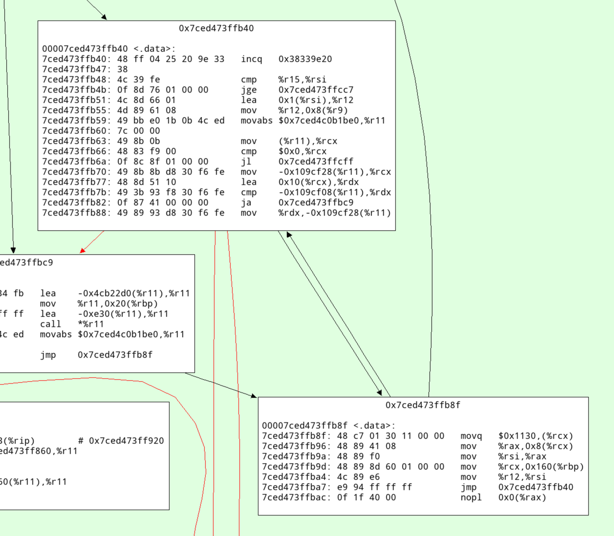

How fast can the RPython GC allocate?
While working on a paper about allocation profiling in VMProf I got curious about how quickly the RPython GC can allocate an object. I wrote a small RPython benchmark program to get an idea of the order of magnitude.
The basic idea is to just allocate an instance in a tight loop:
class A(object): pass def run(loops): # preliminary idea, see below for i in range(loops): a = A() a.i = i
The RPython type inference will find out that instances of A have a single
i field, which is an integer. In addition to that field, every RPython object
needs one word of GC meta-information. Therefore one instance of A needs 16
bytes on a 64-bit architecture.
However, measuring like this is not good enough, because the RPython static optimizer would remove the allocation since the object isn't used. But we can confuse the escape analysis sufficiently by always keeping two instances alive at the same time:
class A(object): pass def run(loops): a = prev = None for i in range(loops): prev = a a = A() a.i = i print(prev, a) # print the instances at the end
(I confirmed that the allocation isn't being removed by looking at the C code that the RPython compiler generates from this.)
This is doing a little bit more work than needed, because of the a.i = i
instance attribute write. We can also (optionally) leave the field
uninitialized.
def run(initialize_field, loops): t1 = time.time() if initialize_field: a = prev = None for i in range(loops): prev = a a = A() a.i = i print(prev, a) # make sure always two objects are alive else: a = prev = None for i in range(loops): prev = a a = A() print(prev, a) t2 = time.time() print(t2 - t1, 's') object_size_in_words = 2 # GC header, one integer field mem = loops * 8 * object_size_in_words / 1024.0 / 1024.0 / 1024.0 print(mem, 'GB') print(mem / (t2 - t1), 'GB/s')
Then we need to add some RPython scaffolding:
def main(argv): loops = int(argv[1]) with_init = bool(int(argv[2])) if with_init: print("with initialization") else: print("without initialization") run(with_init, loops) return 0 def target(*args): return main
To build a binary:
pypy rpython/bin/rpython targetallocatealot.py
Which will turn the RPython code into C code and use a C compiler to turn that into a binary, containing both our code above as well as the RPython garbage collector.
Then we can run it (all results again from my AMD Ryzen 7 PRO 7840U, running Ubuntu Linux 24.04.2):
$ ./targetallocatealot-c 1000000000 0 without initialization <A object at 0x7c71ad84cf60> <A object at 0x7c71ad84cf70> 0.433825 s 14.901161 GB 34.348322 GB/s $ ./targetallocatealot-c 1000000000 1 with initialization <A object at 0x71b41c82cf60> <A object at 0x71b41c82cf70> 0.501856 s 14.901161 GB 29.692100 GB/s
Let's compare it with the Boehm GC:
$ pypy rpython/bin/rpython --gc=boehm --output=targetallocatealot-c-boehm targetallocatealot.py ... $ ./targetallocatealot-c-boehm 1000000000 0 without initialization <A object at 0xffff8bd058a6e3af> <A object at 0xffff8bd058a6e3bf> 9.722585 s 14.901161 GB 1.532634 GB/s $ ./targetallocatealot-c-boehm 1000000000 1 with initialization <A object at 0xffff88e1132983af> <A object at 0xffff88e1132983bf> 9.684149 s 14.901161 GB 1.538717 GB/s
This is not a fair comparison, because the Boehm GC uses conservative stack scanning, therefore it cannot move objects, which requires much more complicated allocation.
Let's look at perf stats
¶
We can use perf to get some statistics about the executions:
$ perf stat -e cache-references,cache-misses,cycles,instructions,branches,faults,migrations ./targetallocatealot-c 10000000000 0 without initialization <A object at 0x7aa260e35980> <A object at 0x7aa260e35990> 4.301442 s 149.011612 GB 34.642245 GB/s Performance counter stats for './targetallocatealot-c 10000000000 0': 7,244,117,828 cache-references 23,446,661 cache-misses # 0.32% of all cache refs 21,074,240,395 cycles 110,116,790,943 instructions # 5.23 insn per cycle 20,024,347,488 branches 1,287 faults 24 migrations 4.303071693 seconds time elapsed 4.297557000 seconds user 0.003998000 seconds sys $ perf stat -e cache-references,cache-misses,cycles,instructions,branches,faults,migrations ./targetallocatealot-c 10000000000 1 with initialization <A object at 0x77ceb0235980> <A object at 0x77ceb0235990> 5.016772 s 149.011612 GB 29.702688 GB/s Performance counter stats for './targetallocatealot-c 10000000000 1': 7,571,461,470 cache-references 241,915,266 cache-misses # 3.20% of all cache refs 24,503,497,532 cycles 130,126,387,460 instructions # 5.31 insn per cycle 20,026,280,693 branches 1,285 faults 21 migrations 5.019444749 seconds time elapsed 5.012924000 seconds user 0.005999000 seconds sys
This is pretty cool, we can run this loop with >5 instructions per cycle. Every
allocation takes 110116790943 / 10000000000 ≈ 11 instructions and
21074240395 / 10000000000 ≈ 2.1 cycles, including the loop around it.
How often does the GC run?¶
The RPython GC queries the L2 cache size to determine the size of the nursery.
We can find out what it is by turning on PYPYLOG, selecting the proper logging
categories, and printing to stdout via :-:
$ PYPYLOG=gc-set-nursery-size,gc-hardware:- ./targetallocatealot-c 1 1 [f3e6970465723] {gc-set-nursery-size nursery size: 270336 [f3e69704758f3] gc-set-nursery-size} [f3e697047b9a1] {gc-hardware L2cache = 1048576 [f3e69705ced19] gc-hardware} [f3e69705d11b5] {gc-hardware memtotal = 32274210816.000000 [f3e69705f4948] gc-hardware} [f3e6970615f78] {gc-set-nursery-size nursery size: 4194304 [f3e697061ecc0] gc-set-nursery-size} with initialization NULL <A object at 0x7fa7b1434020> 0.000008 s 0.000000 GB 0.001894 GB/s
So the nursery is 4 MiB. This means that when we allocate 14.9 GiB the GC needs to perform 10000000000 * 16 / 4194304 ≈ 38146 minor collections. Let's confirm that:
$ PYPYLOG=gc-minor:out ./targetallocatealot-c 10000000000 1 with initialization w<A object at 0x7991e3835980> <A object at 0x7991e3835990> 5.315511 s 149.011612 GB 28.033356 GB/s $ head out [f3ee482f4cd97] {gc-minor [f3ee482f53874] {gc-minor-walkroots [f3ee482f54117] gc-minor-walkroots} minor collect, total memory used: 0 number of pinned objects: 0 total size of surviving objects: 0 time taken: 0.000029 [f3ee482f67b7e] gc-minor} [f3ee4838097c5] {gc-minor [f3ee48380c945] {gc-minor-walkroots $ grep "{gc-minor-walkroots" out | wc -l 38147
Each minor collection is very quick, because a minor collection is O(surviving objects), and in this program only one object survive each time (the other instance is in the process of being allocated). Also, the GC root shadow stack is only one entry, so walking that is super quick as well. The time the minor collections take is logged to the out file:
$ grep "time taken" out | tail time taken: 0.000002 time taken: 0.000002 time taken: 0.000002 time taken: 0.000002 time taken: 0.000002 time taken: 0.000002 time taken: 0.000002 time taken: 0.000003 time taken: 0.000002 time taken: 0.000002 $ grep "time taken" out | grep -o "0.*" | numsum 0.0988160000000011
(This number is super approximate due to float formatting rounding.)
that means that 0.0988160000000011 / 5.315511 ≈ 2% of the time is spent in the GC.
What does the generated machine code look like?¶
The allocation fast path of the RPython GC is a simple bump pointer, in Python pseudo-code it would look roughly like this:
result = gc.nursery_free # Move nursery_free pointer forward by totalsize gc.nursery_free = result + totalsize # Check if this allocation would exceed the nursery if gc.nursery_free > gc.nursery_top: # If it does => collect the nursery and al result = collect_and_reserve(totalsize) result.hdr = <GC flags and type id of A>
So we can disassemble the compiled binary targetallocatealot-c and try to
find the equivalent logic in machine code. I'm super bad at reading machine
code, but I tried to annotate what I think is the core loop (the version
without initializing the i field) below:
... cb68: mov %rbx,%rdi cb6b: mov %rdx,%rbx # initialize object header of object allocated in previous iteration cb6e: movq $0x4c8,(%rbx) # loop termination check cb75: cmp %rbp,%r12 cb78: je ccb8 # load nursery_free cb7e: mov 0x33c13(%rip),%rdx # increment loop counter cb85: add $0x1,%rbp # add 16 (size of object) to nursery_free cb89: lea 0x10(%rdx),%rax # compare nursery_top with new nursery_free cb8d: cmp %rax,0x33c24(%rip) # store new nursery_free cb94: mov %rax,0x33bfd(%rip) # if new nursery_free exceeds nursery_top, fall through to slow path, if not, start at top cb9b: jae cb68 # slow path from here on: # save live object from last iteration to GC shadow stack cb9d: mov %rbx,-0x8(%rcx) cba1: mov %r13,%rdi cba4: mov $0x10,%esi # do minor collection cba9: call 20800 <pypy_g_IncrementalMiniMarkGC_collect_and_reserve> ...
Running the benchmark as regular Python code¶
So far we ran this code as RPython, i.e. type inference is performed and the program is translated to a C binary. We can also run it on top of PyPy, as a regular Python3 program. However, an instance of a user-defined class in regular Python when run on PyPy is actually a much larger object, due to dynamic typing. It's at least 7 words, which is 56 bytes.
However, we can simply use int objects instead. Integers are allocated on the
heap and consist of two words, one for the GC and one with the
machine-word-sized integer value, if the integer fits into a signed 64-bit
representation (otherwise a less compact different representation is used,
which can represent arbitrarily large integers).
Therefore, we can simply use this kind of code:
import sys, time def run(loops): t1 = time.time() a = prev = None for i in range(loops): prev = a a = i print(prev, a) # make sure always two objects are alive t2 = time.time() object_size_in_words = 2 # GC header, one integer field mem = loops * 28 / 1024.0 / 1024.0 / 1024.0 print(mem, 'GB') print(mem / (t2 - t1), 'GB/s') def main(argv): loops = int(argv[1]) run(loops) return 0 if __name__ == '__main__': sys.exit(main(sys.argv))
In this case we can't really leave the value uninitialized though.
We can run this both with and without the JIT:
$ pypy3 allocatealot.py 1000000000 999999998 999999999 14.901161193847656 GB 17.857494904899553 GB/s $ pypy3 --jit off allocatealot.py 1000000000 999999998 999999999 14.901161193847656 GB 0.8275382375297171 GB/s
This is obviously much less efficient than the C code, the PyPy JIT generates much less efficient machine code than GCC. Still, "only" twice as slow is kind of cool anyway.
(Running it with CPython doesn't really make sense for this measurements, since
CPython ints are bigger – sys.getsizeof(5) reports 28 bytes.)
The machine code that the JIT generates¶
Unfortunately it's a bit of a journey to show the machine code that PyPy's JIT generates for this. First we need to run with all jit logging categories:
$ PYPYLOG=jit:out pypy3 allocatealot.py 1000000000
Then we can read the log file to find the trace IR for the loop under the logging category jit-log-opt:
+532: label(p0, p1, p6, p9, p11, i34, p13, p19, p21, p23, p25, p29, p31, i44, i35, descr=TargetToken(137358545605472)) debug_merge_point(0, 0, 'run;/home/cfbolz/projects/gitpypy/allocatealot.py:6-9~#24 FOR_ITER') # are we at the end of the loop +552: i45 = int_lt(i44, i35) +555: guard_true(i45, descr=<Guard0x7ced4756a160>) [p0, p6, p9, p11, p13, p19, p21, p23, p25, p29, p31, p1, i44, i35, i34] +561: i47 = int_add(i44, 1) debug_merge_point(0, 0, 'run;/home/cfbolz/projects/gitpypy/allocatealot.py:6-9~#26 STORE_FAST') debug_merge_point(0, 0, 'run;/home/cfbolz/projects/gitpypy/allocatealot.py:6-10~#28 LOAD_FAST') debug_merge_point(0, 0, 'run;/home/cfbolz/projects/gitpypy/allocatealot.py:6-10~#30 STORE_FAST') debug_merge_point(0, 0, 'run;/home/cfbolz/projects/gitpypy/allocatealot.py:6-11~#32 LOAD_FAST') debug_merge_point(0, 0, 'run;/home/cfbolz/projects/gitpypy/allocatealot.py:6-11~#34 STORE_FAST') debug_merge_point(0, 0, 'run;/home/cfbolz/projects/gitpypy/allocatealot.py:6-11~#36 JUMP_ABSOLUTE') # update iterator object +565: setfield_gc(p25, i47, descr=<FieldS pypy.module.__builtin__.functional.W_IntRangeIterator.inst_current 8>) +569: guard_not_invalidated(descr=<Guard0x7ced4756a1b0>) [p0, p6, p9, p11, p19, p21, p23, p25, p29, p31, p1, i44, i34] # check for signals +569: i49 = getfield_raw_i(137358624889824, descr=<FieldS pypysig_long_struct_inner.c_value 0>) +582: i51 = int_lt(i49, 0) +586: guard_false(i51, descr=<Guard0x7ced4754db78>) [p0, p6, p9, p11, p19, p21, p23, p25, p29, p31, p1, i44, i34] debug_merge_point(0, 0, 'run;/home/cfbolz/projects/gitpypy/allocatealot.py:6-9~#24 FOR_ITER') # allocate the integer (allocation sunk to the end of the trace) +592: p52 = new_with_vtable(descr=<SizeDescr 16>) +630: setfield_gc(p52, i34, descr=<FieldS pypy.objspace.std.intobject.W_IntObject.inst_intval 8 pure>) +634: jump(p0, p1, p6, p9, p11, i44, p52, p19, p21, p23, p25, p29, p31, i47, i35, descr=TargetToken(137358545605472))
To find the machine code address of the trace, we need to search for this line:
Loop 1 (run;/home/cfbolz/projects/gitpypy/allocatealot.py:6-9~#24 FOR_ITER) \ has address 0x7ced473ffa0b to 0x7ced473ffbb0 (bootstrap 0x7ced473ff980)
Then we can use a script in the PyPy repo to disassemble the generated machine code:
$ pypy rpython/jit/backend/tool/viewcode.py out
This will dump all the machine code to stdout, and open a pygame-based graphviz cfg. In there we can search for the address and see this:

Here's an annotated version with what I think this code does:
# increment the profile counter 7ced473ffb40: 48 ff 04 25 20 9e 33 incq 0x38339e20 7ced473ffb47: 38 # check whether the loop is done 7ced473ffb48: 4c 39 fe cmp %r15,%rsi 7ced473ffb4b: 0f 8d 76 01 00 00 jge 0x7ced473ffcc7 # increment iteration variable 7ced473ffb51: 4c 8d 66 01 lea 0x1(%rsi),%r12 # update iterator object 7ced473ffb55: 4d 89 61 08 mov %r12,0x8(%r9) # check for ctrl-c/thread switch 7ced473ffb59: 49 bb e0 1b 0b 4c ed movabs $0x7ced4c0b1be0,%r11 7ced473ffb60: 7c 00 00 7ced473ffb63: 49 8b 0b mov (%r11),%rcx 7ced473ffb66: 48 83 f9 00 cmp $0x0,%rcx 7ced473ffb6a: 0f 8c 8f 01 00 00 jl 0x7ced473ffcff # load nursery_free pointer 7ced473ffb70: 49 8b 8b d8 30 f6 fe mov -0x109cf28(%r11),%rcx # add size (16) 7ced473ffb77: 48 8d 51 10 lea 0x10(%rcx),%rdx # compare against nursery top 7ced473ffb7b: 49 3b 93 f8 30 f6 fe cmp -0x109cf08(%r11),%rdx # jump to slow path if nursery is full 7ced473ffb82: 0f 87 41 00 00 00 ja 0x7ced473ffbc9 # store new value of nursery free 7ced473ffb88: 49 89 93 d8 30 f6 fe mov %rdx,-0x109cf28(%r11) # initialize GC header 7ced473ffb8f: 48 c7 01 30 11 00 00 movq $0x1130,(%rcx) # initialize integer field 7ced473ffb96: 48 89 41 08 mov %rax,0x8(%rcx) 7ced473ffb9a: 48 89 f0 mov %rsi,%rax 7ced473ffb9d: 48 89 8d 60 01 00 00 mov %rcx,0x160(%rbp) 7ced473ffba4: 4c 89 e6 mov %r12,%rsi 7ced473ffba7: e9 94 ff ff ff jmp 0x7ced473ffb40 7ced473ffbac: 0f 1f 40 00 nopl 0x0(%rax)
Conclusion¶
The careful design of the RPython GC's allocation fast path gives pretty good allocation rates. This technique isn't really new, it's a pretty typical way to design a GC. Apart from that, my main conclusion would be that computers are fast or something? Indeed, when we ran the same code on my colleague's two-year-old AMD, we got quite a bit worse results, so a lot of the speed seems to be due to the hard work of CPU architects.
Comments